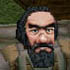
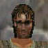

over there. He gets quite grumpy when he drinks. We are
relatively new here ourselves but have made some fast friend in
Qeynos. This is a city of opportunity.
|
Micc Koter | ||||||||||
|
Micc Koter says 'Oh hello Shriast. Don't mind my associate Klieb over there. He gets quite grumpy when he drinks. We are relatively new here ourselves but have made some fast friend in Qeynos. This is a city of opportunity. | |||||||||||
Micc Koter 「おっと、やあ Shriast。あそこにいる僕の同僚の Klieb の
ことは気にしないでくれよ。あいつは飲むとほんとに怒りっぽくなるんだ。
僕らはわりと新参なんだが、Qeynos でしっかり友達になったんだ。
ここは幸運の街だね。
|
Klieb Torne says 'Shut your hole Micc you dirty son of a kobold!
|
Klieb Torne 「てめぇの穴ぼこを閉じろ Micc、この汚らしいコボルドの息子が！
|
穴＝口、ですね・・・たぶん。
| | ||||||||
 |
Klieb Torne | |
|
Klieb Torne says 'Hey Shriast. Do I know you from somewhere? Highpass? Nah, you ain't who I thought you were. If I was you I would just keep my trap shut and buy some drinks. | ||
| Klieb Torne 「おう Shriast。あんたのがどこから来たか知ってるかって？ Highpass か？ いや、あんたはおれの思ってた人じゃねぇな。 おれだったら黙って酒を買うぜ。 | ||
| ちょっと訳が違うかもしれません。ちなみに「ain't」は「aren't」らしいです。 | ||
|  | Trumpy Irontoe | |
|
Trumpy Irontoe says 'Heh? What's yer name? Shriast? Never heard of ya. Now quit breathin' on me and buy us some [drinks]. | ||
| Trumpy Irontoe 「へえ？ なんて名前だおめぇ？ Shriast？ 聞いたこと ねえな。おら、おれに息吹きかけんのやめて[ 酒 ]買って来いや。 | ||
| 何かとアヤシイ Trumpy。彼の好きなお酒は・・・？ ネタバレ注意。 | ||
|  | Raz The Rat Misk | |
|
Raz The Rat Misk says 'Spare 3 gold so I can get a decent meal for once master? | ||
| Raz The Rat Misk 「一度まともな食事できるように、３ゴールド 分けてくれませんかね、旦那？ | ||
|
Faren | |
|
Faren says 'Oh.. Hiya. I'm just out here fishing, since I can't find a job. I hope this [bait] that I just bought catches me a big ol' fish. | ||
| Faren 「ああ・・・やぁ。ちょっとここに魚釣りに出てるんだ。 仕事が見つからなくって。さっき買ったこの[ 餌 ]で、でっかい魚が釣れると いいんだけどなぁ。 | ||
|
Nindle Hogster | |
|
Nindle Hogster says 'Hello.You should take up fishing. It really relieves the stress accompanied with heavy adventuring. | ||
| Nindle Hogster 「やあ。君、釣りを趣味にするといいよ。釣りは 実際、きつい冒険のストレスを和らげてくれるからね。 | ||
 |
Anehan Treol | |
|
Anehan Treol says 'Ah.. Hello there.. Shriast, was it? Yes, right, Shriast. Anyhow, my name's Anehan Treol, member of the League of Antonican Bards. Feel free to visit our humble guild house here in South Qeynos. It's called the Wind Spirit's Song, and we often put on free shows there. I think you'd enjoy it. Anyways, nice chatting with you, and I hope to see you again soon. | ||
| Anehan Treol 「ああ・・・やあこんにちは・・・Shriast、だっけか？ ああ、そう、 Shriast だな。まあどっちにせよ、俺の名前はAnehan Treol、League of Antonican Bards のメンバーだ。South Qeynos のつつましやかなうちのギルドの 建物を気軽に訪ねてくれよ。Wind Spirit's Song って呼ばれてるんだが。 俺たちはよくそこで無料でショーをやってるんだ。楽しめると思うぜ。 とにかく、お喋りできて楽しかったよ、またすぐにでも会えるといいな。 | ||
|
Behroe Dlexon | |
|
Behroe Dlexon says 'Ah, greetings Shriast. How are you this evening? Hopefully, you are faring much better than I.. I'm stuck on the night watch here, and never get to see my lovely [Aenia]. Ah.. she is so sweet.. I wrote her this beautiful [ballad], but I fear that she may never get to hear it. | ||
| Behroe Dlexon 「ああ、ごきげんよう Shriast。今晩の 調子はどうだい？ 望むらくは、君が僕よりもうまくやっています ように・・・。僕はここで夜間の見張りに貼りついていて、 愛しい[ Aenia ]に会いに行くことは決してできない。ああ・・・ 彼女は本当にかわいらしい・・・。僕は彼女にこの美しい [ バラード ]を 書いたんだが、彼女は決してそれを聞くことができないかもしれない ことが不安でならないよ。 | ||